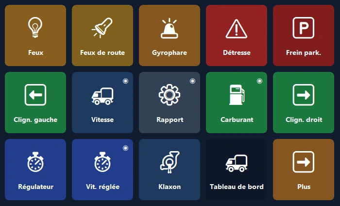
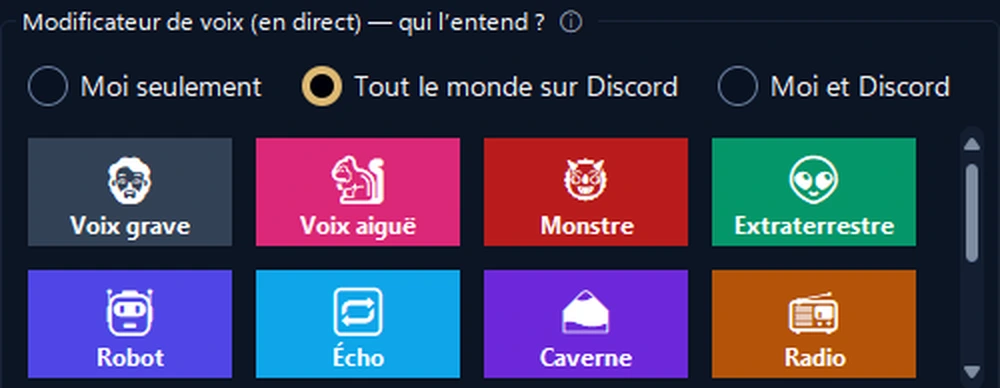
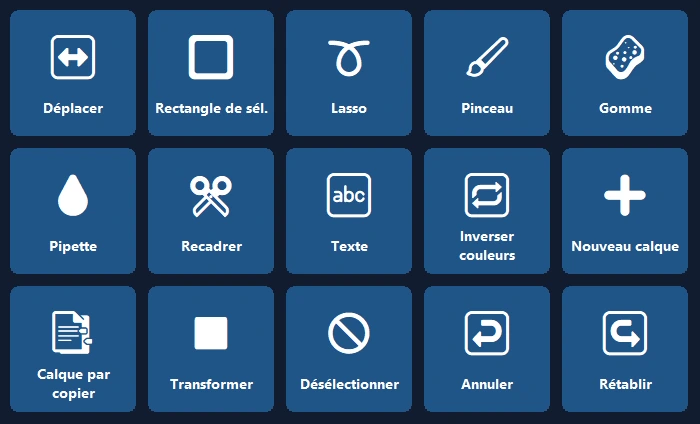
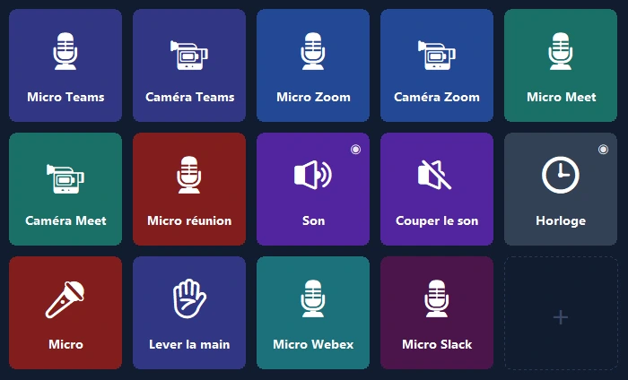

Votre téléphone, le panneau de contrôle de votre PC.
Raccourcis en un geste, OBS, Discord, Spotify et panneaux de jeu. Par USB, Wi‑Fi ou données mobiles, avec chiffrement de bout en bout.
Le tableau de bord de votre camion, sur votre téléphone.
Vitesse, régime, carburant et voyants réalistes en temps réel ; les commandes du camion en un geste.
- 🚦Un vrai tableau de bordVitesse, limite, régime, carburant et heure d'arrivée ; les voyants s'allument comme dans le jeu.
- 🕹Commandes en un gestePhares, frein de stationnement, régulateur ; regardez à gauche ou à droite d'un seul geste.
- 📳Aucun réglageAu lancement du jeu, le téléphone propose un panneau prêt, puis y bascule tout seul à chaque fois.

Gérez votre live d'une seule main.
Votre téléphone à la place d'un appareil coûteux : OBS, effets sonores, Discord et musique sur un seul écran.
- 🎬Contrôle d'OBSScènes, enregistrement et diffusion, minuteurs directement sur la touche.
- 📳Panneau audio et musiqueJouez des sons prêts, contrôlez Spotify et le volume de chaque application sur un seul écran.
- 🎙Studio VoixVoix naturelles de femme, d'homme et d'enfant, ou la vôtre ; coupez le micro de Discord d'un geste.


Ouvrez le logiciel, le panneau est déjà prêt.
Des panneaux basés sur les raccourcis officiels de Photoshop, Premiere Pro, After Effects, Illustrator, DaVinci Resolve, Blender, Figma et VS Code.
- ✨Aucun réglageQuand le logiciel passe au premier plan, le téléphone propose son panneau puis y bascule tout seul (Pro).
- ⌨Les bons raccourcisOutils, calques, annuler, marqueurs : avec les raccourcis standard de chaque logiciel.
Votre micro en un geste.
Coupez le micro dans Teams, Zoom, Meet, Webex et Slack sans configurer de raccourcis, même quand la fenêtre de réunion est en arrière-plan.
- 🎙Seulement ce logicielWindows coupe le micro uniquement pour le logiciel de réunion ; les autres logiciels ne sont pas touchés.
- 🔴État toujours visibleTant que le micro est coupé, le voyant de la touche reste rouge ; inclus aussi dans la version gratuite.

L'écran le plus utile de votre bureau.
Démarrez en une minute avec une disposition prête ; les vrais logos de vos logiciels apparaissent tout seuls.
Second écran
Affichez l'écran du PC sur le téléphone et utilisez-le comme souris tactile et clavier.
Volume par application
Le volume de chaque logiciel séparément ; casque ↔ haut-parleurs d'un geste.
Pages intelligentes
Les pages suivent le logiciel au premier plan ; minuteurs, dossiers et actions en plusieurs étapes.
Connexion de partout
Pas besoin du même Wi‑Fi : fonctionne aussi en données mobiles et avec plusieurs PC.
Sauvegarde cloud chiffrée
Votre disposition est sauvegardée chiffrée, sans compte, et revient sur un nouveau PC.
Confidentialité
Pas de compte, pas de publicité, pas de pistage. Vos touches restent sur vos appareils.
Prêt en une minute.
Installez le logiciel
Téléchargez PanelDeck gratuitement pour Windows et ouvrez-le.
Scannez le QR
L'application du téléphone se connecte en quelques secondes avec le code QR.
Touchez
Choisissez une disposition prête ou créez vos propres touches.
Payez une fois, utilisez pour toujours.
Pas d'abonnement, pas de publicité, pas de pistage. Toutes les mises à jour incluses. Google Play affiche le prix local de votre pays.
Gratuit
- Connexion par USB, Wi‑Fi et données mobiles
- 6 touches sur la première page
- Raccourcis, médias, lancement de logiciels, Discord, minuteur
PanelDeck Pro
Prix de lancement ; ensuite 6,99 $ US. 7 jours d'essai gratuit.
- 6 onglets, dossiers et touches illimités
- Second écran, curseurs de volume, infos en direct
- Panneau du camion, Studio Voix, panneaux à l'ouverture des logiciels
- Sauvegarde cloud chiffrée
Bon à savoir
Faut-il un compte ?
Non. PanelDeck ne demande pas de compte ; vos touches restent sur vos appareils.
Ça marche hors de chez moi ?
Oui. Sans le même Wi‑Fi, le téléphone se connecte via les données mobiles avec chiffrement de bout en bout.
Avec quels jeux ?
Euro Truck Simulator 2 et American Truck Simulator sont entièrement pris en charge. Les panneaux en direct pour les simulateurs de course et de vol sont en bêta.
Existe-t-il pour iPhone ?
Pour l'instant, Android uniquement. La version iPhone et iPad est prévue.
Windows affiche « Windows a protégé votre ordinateur », que faire ?
Cliquez sur « Informations complémentaires » → « Exécuter quand même ». Détails dans le guide d'installation.
Préparez votre panneau dès aujourd'hui.
Commencez gratuitement et passez à Pro quand vous voulez.
⬇ Télécharger gratuitement pour Windows